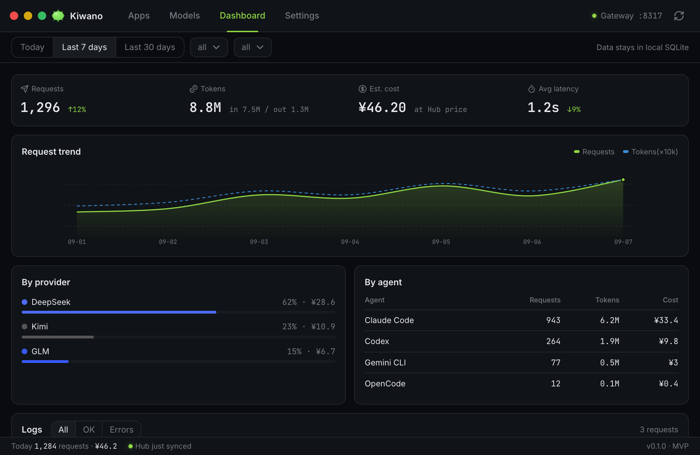

A local gateway × a provider catalog
Neither a plain switcher nor a cloud gateway: routing and metering run locally, while the Hub catalog helps you choose.
Provider management
Add, switch and delete provider configs; route with failover / roundrobin / timewindow / quota strategies — one click to go live.
One-click agent takeover
Point Claude Code, Codex, Grok Build and five more agents at the local gateway in one click; flip the switch off to restore the original config, anytime.
Local gateway
A single resident port at 127.0.0.1:8317 normalizes anthropic / openai protocols, routing and metering every request with automatic failover.
Usage dashboard
7-day trends of requests, tokens, cost and latency, attributed per provider and agent — drill down to every single request.
Provider shelf
The Hub catalog files providers as official / aggregator / third-party / free — transparent pricing, add in one click, and readable offline once synced.
cc-switch import
Already on cc-switch? Import your existing config and migrate seamlessly — providers and bindings come along as-is.
Insights and rules, written back to your agents
kiwano insights reads how every agent actually works — cache hit rate, session context growth, reasoning share, retries — and picked findings become rules appended into the agent's own CLAUDE.md/AGENTS.md. Advice only: nothing is reconfigured behind your back.
Live numbers, and agents that ask their own questions
The gateway ticks the moment a request is recorded and the screens re-read on their own — no clicking refresh. Opt-in MCP lets your agents query their own usage directly.
Compact and restrained, built for daily use
A single 1000×650 window where the first screen is your provider list — no dashboard maze, everything one click away.

7-day trends of requests / tokens / cost / latency, attributed per provider and agent — all in local SQLite.
Three steps, never hand-edit config files again
Each agent's base_url is pointed at the gateway once; every switch after that is just a routing change — instant, no restarts.
Add a provider
Add from the shelf in one click, or use a custom endpoint; API keys go into a local database, never uploaded.
Take over your agents
Point Claude Code / Codex / Grok Build at 127.0.0.1:8317 in one click; the original config is backed up automatically.
Switch freely
Switching is one click in the list: agent configs are never touched again — only gateway routing changes, with automatic failover.
Four routing strategies, bad days included
Bind a set of candidate providers to each agent; the strategy decides who handles each request — enforced per-request by the gateway, effective immediately.
Failover
Candidates ranked by priority: if the primary fails or times out, traffic moves to the next in line, and returns once it recovers.
Round robin
Requests rotate across candidates, spreading usage and load so no single provider gets overwhelmed.
Time window
Give each candidate a local time window — subscription plan overnight, pay-as-you-go by day. Windows past midnight wrap; unmatched times fall back.
Quota cutover
Set spend or request caps per candidate; on hitting a cap traffic moves to the next, and caps reset each period — spend stays in control.
Download Kiwano
Free, no account, works offline. Pick your platform:
macOS
Windows
The installer is not code-signed yet, so SmartScreen stops it once — choose “More info → Run anyway”.
Linux
Open sourceNo accountData stays on your machine
No desktop? It runs headless
The client and the gateway ship in one bundle. The command line does everything the app does — add providers, pick a routing strategy, read usage and logs, and take an agent over.
Install in one command
Downloads and checks the client and the gateway, registers the gateway as a service for your account, and keeps the database in ~/.kiwano. No root.
curl -fsSL https://hub.kiwano.cc/install.sh | sh
Take your agents over
Rewrites the agent's own config to point at the gateway and mints the placeholder key it will accept — the gateway only routes keys it issued itself, so pointing it at the port by hand gets you a 401.
kiwano agents takeover claude
Routing, metering, logs
failover, roundrobin, time windows and quota; seven-day usage and cost; per-request logs with CSV export.
kiwano routes strategy claude failover
No root neededsystemd serviceFull command reference in the docs